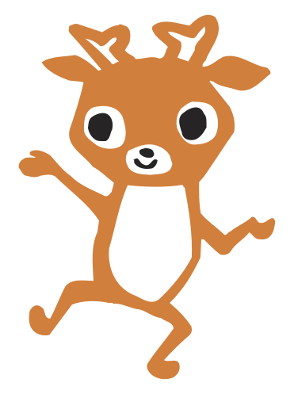
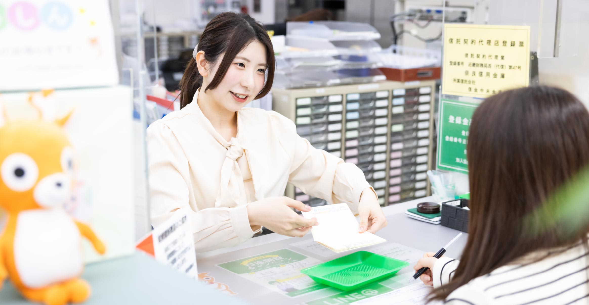
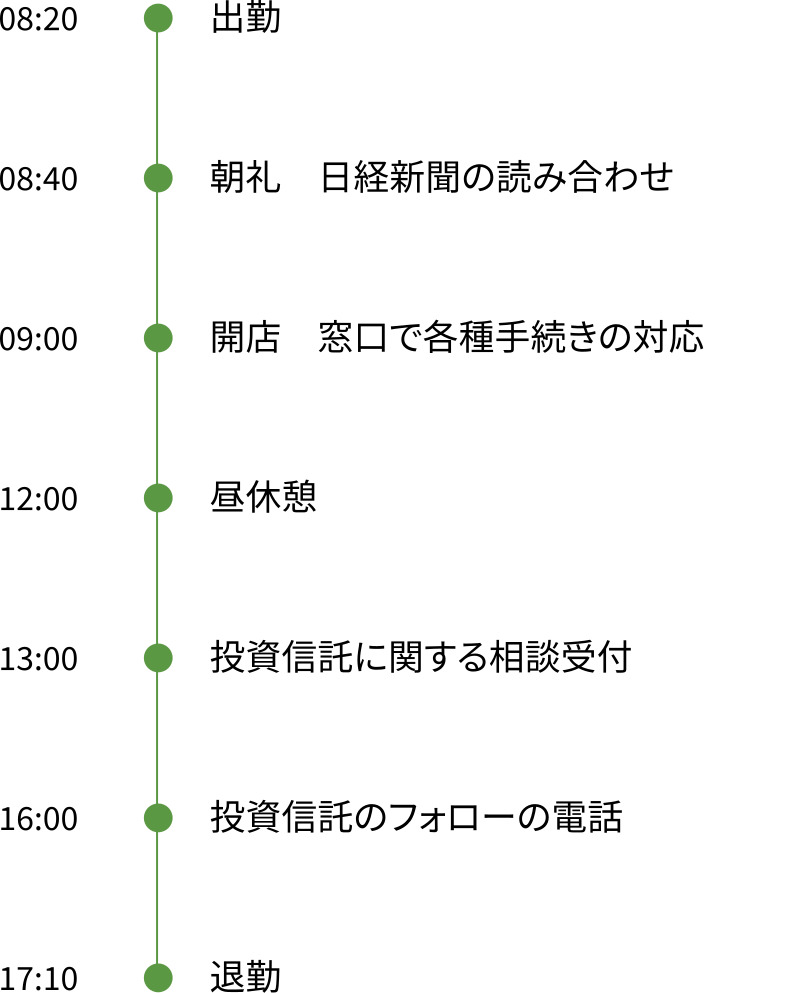
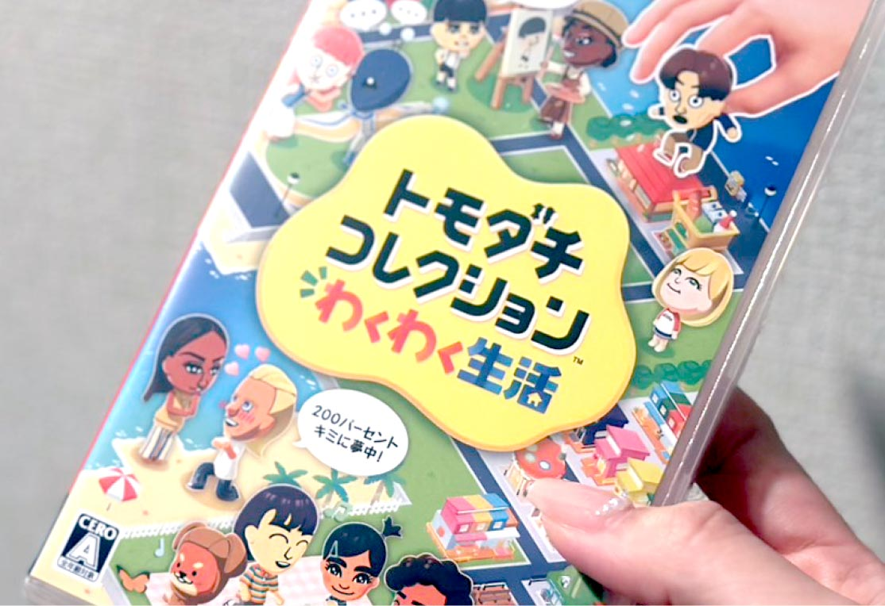
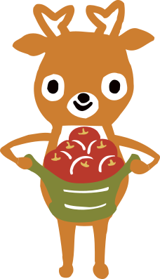

職員インタビューStaff interview
#02
筒井 美妃
尼ヶ辻支店 営業課
2021年入庫（国際学部卒）


入庫動機
地域密着の金融機関で
お客さまの人生をサポートしたい。
私は奈良県で生まれ育ち、一度も県外に出ていないことから人一倍、地元に貢献したいという気持ちを強く持っていました。また、学生時代のアルバイトを通じて、人と接する仕事に就きたいとも考えていました。なかでも「ならしん」は、奈良北部を中心に事業を展開する地域密着の金融機関。お客さまと深く関わりながら信頼を築き、人生をサポートできる点に魅力を感じました。さらに地域貢献活動を精力的に行っていることも入庫理由になりました。
現在の仕事内容
一人ひとりの要望やライフプランに合った最適な提案を。
入庫以来、窓口業務を担当しています。1年目は主に預金業務を中心に基本的な知識を覚え、2年目からは投資信託や保険商品等の運用に関する提案も行っています。私は人と接することが好きで、お客さまの顔と名前を覚えることが得意。2回目には「以前、お話していた件はどうなりましたか」と会話を深めながら信頼関係を築いています。経験を重ねることで、「将来のお金のことが不安で、何かいい商品はありますか」といった相談を受けることが増え、教育資金やマイホームの定期積立、老後の資産形成など、お客さま一人ひとりのニーズやライフプランに合わせた最適な提案を心がけています。
また、現在では後輩の指導を任されています。間違ったことを伝えないように事前に細かな規定を調べますが、自分の仕事の振り返りになり責任感も芽生えました。そのほかにも支店のイベント企画や運営にも積極的に携わっています。


苦労したことや挑戦してきたこと
相手の立場になり、商品知識を
養うことで提案力の向上を目指す。
お客さまのニーズに合わせた提案力の向上に挑戦してきました。私は常に相手の立場に立ち、何をしたら喜んでいただけるのかを考えて行動するように。さらに多種多様な商品の知識やプラン変更についてその都度学び、日々変化する世界情勢を把握するため、毎朝支店のみなさんと日経新聞の読み合わせを行っています。その結果、お客さまに「あなたに相談してよかった」と言っていただける機会が増え、自分の提案に自信が持てるようになりました。
仕事のやりがい
お客さまとの距離が近いからこそ
頼りにされて役立つ喜びを実感。
今はネット銀行で、いつでも手軽に金融取引ができます。その一方で、自分ですべてを調べて実行することに不安を感じているお客さまも少なくありません。窓口で直接顔を合わせて相談を受け、「あなたがいてくれてよかった」と感謝の言葉をお聞きしたときには大きなやりがいを感じます。また、支店を異動した際に「筒井さんがいなくなったらどうすればいいの？」と言っていただき、自分自身がお役に立つ存在であったことを改めて実感しました。
自身が成長したと感じるポイント
長年にわたる幅広い経験の中で
判断力と伝える力を養えた。
お客さまのニーズは一人ひとり異なり、金融商品も多岐にわたるため、6年目の今でも初めての案件に関わることがあります。マニュアル通りに対応しきれないケースにも多く直面しましたが、長年の経験を通じて状況に応じた判断力が身につきました。また、お客さまの年齢や理解度に合わせ、なるべく専門用語を使わずにわかりやすく伝える力も養えたように思います。これからもみなさんが理解と納得をされた上で、安心してご利用できるように努めていきます。

入庫後に感じたギャップ
お子さんも気軽に立ち寄れる
地域に親しまれる金融機関だと感じた。
学生時代に金融機関の窓口に行く機会はほとんどなく、敷居の高いイメージを持っていました。けれども「ならしん」では、お客さま感謝デーやイベントなどに力を入れているため、誰もが親しみを持って利用できる金融機関だと感じています。夏休み期間にお孫さんと一緒に来店されて、縁日のスーパーボールすくいを楽しんでいる様子を見ると、とても微笑ましいですね。私自身、ロボット工作やハンドケア体験など、様々なイベント企画に携わってきました。
これからの目標
幅広い知識を深く理解し、
より質の高い提案を目指したい。
金融サービスの基本的な業務や知識は身についたものの、窓口では税金や社会保険料などの質問を受けることがあり、上司に頼る場面も少なくありません。これからも現状に満足せず、多くの商品知識や専門知識の習得をすることで、より質の高い提案ができるよう努めていきたいと思います。そのためにFP（ファイナンシャル・プランナー）や銀行業務検定の資格取得に挑戦し、お客さまに安心感を与えられる存在を目指していきます。
1日のスケジュール

オフの日の過ごし方

ゲームのほかにもジムに通い、
バイクライフを楽しむことも！

キャリア
| 1年目 | 大宮支店営業課 | 窓口で主に個人のお客さまのご相談に対応し、金融商品の提案なども行う。 |
|---|---|---|
| 3年目 | 尼ヶ辻支店営業課 | 法人のお客さまも担当し、後輩の指導や支店のイベント企画・運用にも携わる。 |